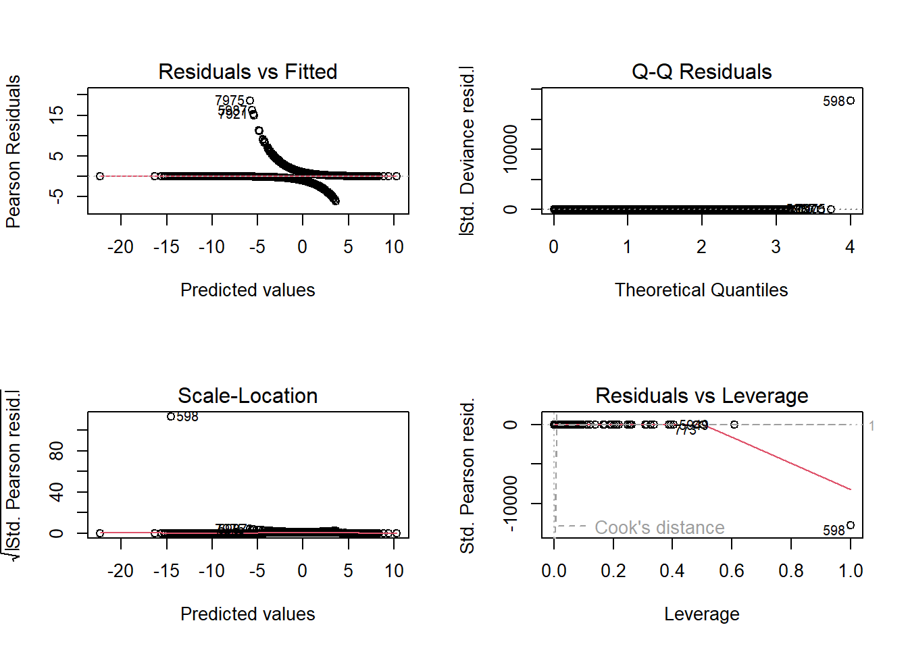

A1. What variables have the biggest impact on customer churn?
A2. this analysis aims to create a multiple logistic regression model that can accurately predict customer churn. Company executives can use the data from this model to address customer churn more accurately.
Part II: Method Justification
B1. According to Zach Bobbitt from statology.org, there are 6 Assumptions of logistic regression. (Z. Bobbit 2020)
The Response variable needs to be binary. I will be using a binary factor type in this analysis.
The observations need to be independent because they do not represent the same individual. For example, time series data about the height of an individual would violate this assumption because the observations are all repeated measurements unique to an individual.
multi-colinearity needs to be minimized among variables. Multicolinearity occurs when there is a high correlation between variables. Multi-colinearity is a problem because the highly correlated variables essentially tell the same story and do not add any unique information.
Outliers have been appropriately managed.
The relationship between the explanatory variables and the logit of the response variable is linear.
Lastly, linear regression assumes that the sample size is large enough to ensure reliable and meaningful conclusions from the fitted model.
B2. I will be using R within R-Studio to perform this analysis. While Python can perform this same statistical analysis, it was not explicitly designed for this purpose. R, on the other hand, was specifically designed for statistical analysis (Ihaka, n.d., p. 12). Due to this, R is the more logical choice for performing statistical tasks. Secondly, I have more experience using R than I do with Python. I’ve used R to complete previous courses, and I feel that it is more intuitive than Python.
B3. Logistic regression is the appropriate technique for this analysis because the dependent variable is binary (Yes = 1, No = 0). Additionally, the predictor variables include a mix of categorical and continuous types, making logistic regression a good choice. Lastly, logistic regression ranks customers based on their odds of churning, enabling the company to promptly identify and address at-risk customers.
Part III: Data Preparation
C1. I need to remove irrelevant columns such as customer_id, CaseOrder, and some other columns that have data not relevant to my question. Secondly I have to update the data types. The Categorical variables will be converted to factors and the remaining quantitative variables will be converted to integer or numeric depending on the values. Once I have all the data cleaned and prepared Ill be ready to feed it into an initial linear model.
C2. The dependent variable I’m explaining is ‘Churn.’ After I removed several columns of data that had to many unique entries or contained irrelevant information, such as customer_id, or lat and lng, I was left with around 70 independent variables, including the automatically generated dummy variables. The numeric and integer types all include a min, 1st Qu, Median, Mean, 3rd Qu, and Max values whereas the factors include just the count for each level. The summary statistics below show all of the variables including the dependant variable, that I will be using in my linear model. I will explain how I ended up with these variables in the next few sections.
summary(churn)
Population Area Children Age
Min. : 0 Rural :3327 Min. : 0.000 Min. :18.00
1st Qu.: 738 Suburban:3346 1st Qu.: 0.000 1st Qu.:35.00
Median : 2910 Urban :3327 Median : 1.000 Median :53.00
Mean : 9757 Mean : 2.088 Mean :53.08
3rd Qu.: 13168 3rd Qu.: 3.000 3rd Qu.:71.00
Max. :111850 Max. :10.000 Max. :89.00
Income Marital Gender Churn
Min. : 348.7 Divorced :2092 Female :5025 0:7350
1st Qu.: 19224.7 Married :1911 Male :4744 1:2650
Median : 33170.6 Never Married:1956 Nonbinary: 231
Mean : 39806.9 Separated :2014
3rd Qu.: 53246.2 Widowed :2027
Max. :258900.7
Outage_sec_perweek Email Contacts Yearly_equip_failure
Min. : 0.09975 Min. : 1.00 Min. :0.0000 Min. :0.000
1st Qu.: 8.01821 1st Qu.:10.00 1st Qu.:0.0000 1st Qu.:0.000
Median :10.01856 Median :12.00 Median :1.0000 Median :0.000
Mean :10.00185 Mean :12.02 Mean :0.9942 Mean :0.398
3rd Qu.:11.96949 3rd Qu.:14.00 3rd Qu.:2.0000 3rd Qu.:1.000
Max. :21.20723 Max. :23.00 Max. :7.0000 Max. :6.000
Techie Contract Port_modem Tablet InternetService Phone
0:8321 Month-to-month:5456 0:5166 0:7009 DSL :3463 0: 933
1:1679 One year :2102 1:4834 1:2991 Fiber Optic:4408 1:9067
Two Year :2442 None :2129
Multiple OnlineSecurity OnlineBackup DeviceProtection TechSupport StreamingTV
0:5392 0:6424 0:5494 0:5614 0:6250 0:5071
1:4608 1:3576 1:4506 1:4386 1:3750 1:4929
StreamingMovies PaperlessBilling PaymentMethod
0:5110 0:4118 Bank Transfer(automatic):2229
1:4890 1:5882 Credit Card (automatic) :2083
Electronic Check :3398
Mailed Check :2290
Tenure MonthlyCharge Bandwidth_GB_Year Timely_response
Min. : 1.000 Min. : 79.98 Min. : 155.5 1: 224
1st Qu.: 7.918 1st Qu.:139.98 1st Qu.:1236.5 2:1393
Median :35.431 Median :167.48 Median :3279.5 3:3448
Mean :34.526 Mean :172.62 Mean :3392.3 4:3358
3rd Qu.:61.480 3rd Qu.:200.73 3rd Qu.:5586.1 5:1359
Max. :71.999 Max. :290.16 Max. :7159.0 6: 199
7: 19
Timely_fixes Timely_replacements Reliability Options Respectful Courteous
1: 217 3 :3435 1: 221 1: 206 3 :3445 1: 219
2:1360 4 :3410 2:1350 2:1378 4 :3333 2:1309
3:3415 2 :1424 3:3430 3:3462 2 :1427 3:3446
4:3412 5 :1313 4:3452 4:3417 5 :1382 4:3456
5:1368 6 : 203 5:1335 5:1321 6 : 210 5:1335
6: 215 1 : 202 6: 203 6: 204 1 : 190 6: 224
7: 13 (Other): 13 7: 9 7: 12 (Other): 13 7: 11
Active_listening
3 :3461
4 :3400
2 :1378
5 :1335
1 : 206
6 : 205
(Other): 15
C3. After running stepwise model selection based on the Akaike Information Criterion (AIC) and Backward elimination, I was left with far fewer variables than the initial model that included nearly 50 variables. I eliminated more using VIF(), which I will explain later. The following charts are the distributions of the variables I included in the final “reduced_model.”
GO OVER THESE PLOTS TO MAKE SURE IM STILL USING THESE VARIABLES
Univariate plots
Bivariate plots
C4. renamed the survey response variables to improve clarity and converted them to factors. R automatically generates dummy variables for each unique value in these factor variables. Additionally, I applied scaling to some of the larger quantitative variables using the built-in scale() function in R (R Core Team, 2019). This process, known as standardization or z-score normalization, is described in an article from GeeksforGeeks titled ’Logistic Regression and the Feature Scaling Ensemble.
C5. The prepared data set will be included in my submission files.
Part IV: Model Comparison and Analysis
Note: Your responses to the task prompts must be provided in a document file. Unless otherwise specified, responses to PA requirements that are included in a Python or RStudio notebook will not be accepted.
D1.
To set up my initial model i first started by seperateing in the data in to training and test sets with a 80/20 split. The initial model will attempt to explain Churn by all the remaining variables in the dataset that were not removed in the data cleaning step.
I begin by creating a linear model using glm() because I need to use the statistical family “binomial’ for logistic regression. I based the model on the training set of data, churn_train.
initial_model <-glm(Churn ~. , data = churn_train, family ='binomial')summary(initial_model)
The summary of the initial model shows that there are several variables who’s coefficients do not add any statistically significant information to the model. I’ll address these in the next step.
The null deviance is 9251.6 on 7999 degrees of freedom, meaning that my response variable, Churn, shows a lot of variability without predictors and could be explained by adding predictor variables. The residual deviance of 3419.4 on 7910 degrees of freedom indicates that the predictor variables do indeed provide an effective explanation of the variability in Churn.
The AIC for this model is 3599.4. I will reference this number again when comparing the reduced model.

2. I’ve chosen to use backward stepwise selection (Larose & Larose, 2019), because I have a large amount of variables and backward elimination will remove each insignificant variable until only those values that have a meaningful contribution will remain.
initial_model <-stepAIC(object = initial_model, direction ="backward", trace =FALSE)summary(initial_model)
par(mfrow =c(2, 2)) # Arrange plots in a 2x2 gridplot(initial_model)
3. Provide a reduced logistic regression model that follows the feature selection or model evaluation process in part D2, including a screenshot of the output for each model.
E. Analyze the data set using your reduced logistic regression model by doing the following in a document file:
1. Explain your data analysis process by comparing the initial logistic regression model and reduced logistic regression model, including the following element:
• a model evaluation metric
2. Provide the output and all calculations of the analysis you performed, including the following elements for your reduced logistic regression model:
• confusion matrix
• accuracy calculation
3. Provide an executable, error-free copy of the code used to support the implementation of the logistic regression models using a Python or R file.
Part V: Data Summary and Implications
Note: Your responses to the task prompts must be provided in a document file. Unless otherwise specified, responses to PA requirements that are included in a Python or RStudio notebook will not be accepted.
F. Summarize your findings and assumptions by doing the following in a document file:
1. Discuss the results of your data analysis, including the following elements:
• a regression equation for the reduced model
• an interpretation of the coefficients of the reduced model
• the statistical and practical significance of the reduced model
• the limitations of the data analysis
2. Recommend a course of action based on your results.
Part VI: Demonstration
G. Provide a Panopto video recording that includes the presenter and a vocalized demonstration of the functionality of the code used for the analysis of the programming environment, including the following elements:
• an identification of the version of the programming environment
• a comparison of the initial logistic regression model you used and the reduced logistic regression model you used in your analysis
• an interpretation of the coefficients of the reduced model
Note: The audiovisual recording should feature you visibly presenting the material (i.e., not in voiceover or embedded video) and should simultaneously capture both you and your multimedia presentation.
Note: For instructions on how to access and use Panopto, use the “Panopto How-To Videos” web link provided below. To access Panopto’s website, navigate to the web link titled “Panopto Access,” and then choose to log in using the “WGU” option. If prompted, log in using your WGU student portal credentials, and then it will forward you to Panopto’s website.
To submit your recording, upload it to the Panopto drop box titled “Regression Modeling – NBMx | D208.” Once the recording has been uploaded and processed in Panopto’s system, retrieve the URL of the recording from Panopto and copy and paste it into the Links option. Upload the remaining task requirements using the Attachments option.
H. List the web sources used to acquire data or segments of third-party code to support the application. Ensure the web sources are reliable.
I. Acknowledge sources, using in-text citations and references, for content that is quoted, paraphrased, or summarized.
Bobbitt, Z. (2020, October 13).The 6 Assumptions of Logistic Regression (With Examples). Statology. Retrieved December 29, 2024, from https://www.statology.org/assumptions-of-logistic-regression/)
GeeksforGeeks. (2021, June 17). Logistic Regression and the Feature Scaling Ensemble. GeeksforGeeks. Retrieved January 2, 2025, from https://www.geeksforgeeks.org/logistic-regression-and-the-feature-scaling-ensemble/#
Ihaka, R. (n.d.). The R Project: A brief history and thoughts about the future (p. 12). The University of Auckland. Retrieved November 17, 2024, from https://www.stat.auckland.ac.nz/~ihaka/downloads/Otago.pdf (https://www.stat.auckland.ac.nz/~ihaka/downloads/Otago.pdf)
Larose, C. D., & Larose, D. T. (2019). Data science using Python and R. Wiley. Retrieved from https://eds.p.ebscohost.com/eds/ebookviewer/ebook/bmxlYmtfXzIwOTEzNzFfX0FO0?sid=04ef9475-3bed 4dbe-8317-a1c5eb6da3cb@redis&vid=0&format=EB&lpid=lp_151&rid=0
R Core Team. (2019). scale function. R Documentation. Retrieved January 1, 2025 from https://www.rdocumentation.org/packages/base/versions/3.6.2/topics/scale
J. Demonstrate professional communication in the content and presentation of your submission.